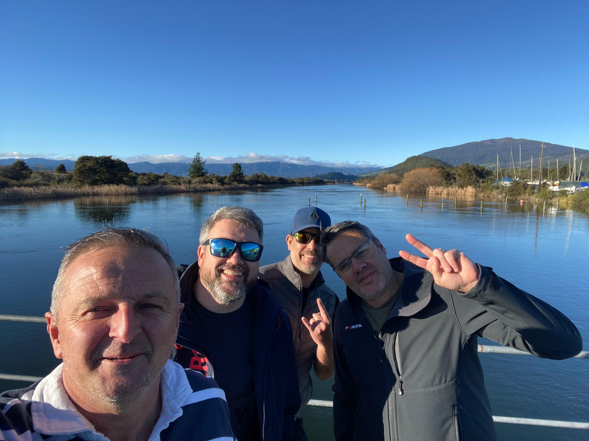
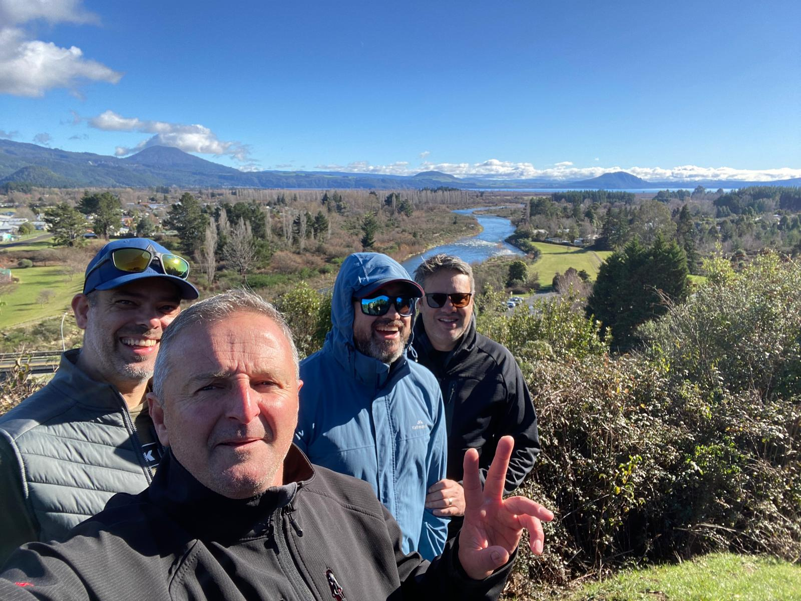

A private men's retreat · Turangi
Three quiet nights to get your head clear.
Space to think, time in the water and the bush, and honest conversation without the noise. A private reset, for men who've been running on empty.
What this is
A small, unhurried retreat — not a programme, not a course.
Clear Head Retreat is a private stay at a quiet Turangi home, kept deliberately small so it never feels like a workshop.
Three nights built around nature, reflection and a few honest conversations. It's facilitated and structured, but it isn't therapy and it isn't counselling — it's simply space that most men don't give themselves.
Honest about fit
Who it's for — and who it isn't.
This is for you if you…
- Feel mentally overloaded or close to burnt out
- Want quiet space to actually think
- Value your privacy
- Like being outdoors
- Want direction, without sitting in a therapy room
- Just need to reset
It isn't the right place if you…
- Are in an acute mental health crisis
- Are looking for therapy or counselling
- Aren't comfortable with quiet reflection or honest conversation
If you're in crisis, please reach out to a GP or, in New Zealand, call or text 1737 any time to talk with a trained counsellor.
Days on the river
Time outside is most of the medicine.
Days are unhurried and weather-led. You choose how much to take on — some men fish and read, others want a full day on the mountain.

Guided walks
Native bush and river tracks, at a pace that lets you think.

Trout fishing
The Tongariro is world-known water. No experience needed.

Golf
A relaxed round at the local course when the weather's kind.
Mountain biking
Trails for most levels, when there's appetite for it.
Horse riding
A quieter way to see the country.
Tongariro adventures
The alpine crossing and rafting, when conditions allow.
Anything alpine or on the water is weather-dependent — safety comes first, always. Other activities can be arranged on request.
Enough quiet to hear yourself think again.
Kept small on purpose
Small enough to be honest.
Most retreats fill a room and call it connection. I'd rather keep it small — small enough that no one hides at the back, and the conversations that actually matter have room to happen.
It stays personal because it has to. You're not a name on a list here; you're one of a handful of men sharing three quiet nights, and I get to know all of you properly.
- Trust builds quickly when it's this personal
- Conversations stay honest, not performative
- The house stays calm and unhurried
- The connections tend to outlast the stay
By invitation
There's no booking button — and that's on purpose.
Every retreat is arranged personally. You send a short enquiry, we have a brief conversation to check it's the right fit for everyone, and the details, dates and pricing are worked out from there.